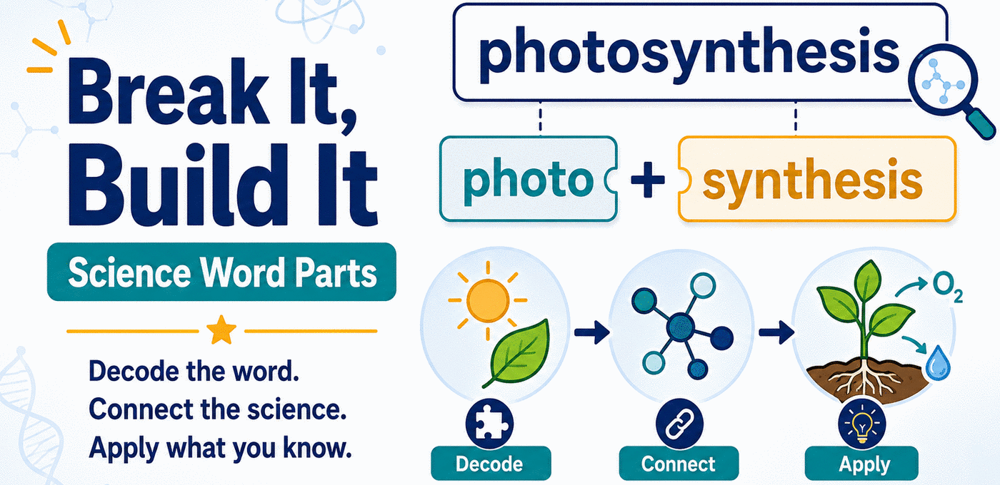

Break It, Build It — Science Word Parts
Printable science word-part activities for grades 3–8, with 9–12 planned. Students predict what an unfamiliar science term means from its Greek and Latin parts, then test that prediction against a diagram, a passage, or data.
Choose a grade band
Grades 3–5 and 6–8 are complete and validated. They set the template the 9–12 band is being built from.
Grades 3–5
High-frequency, concrete word parts: BIO, GEO, HYDRO, THERM, MICRO, SPHERE, METER, VORE. Twelve activities from a first Break It sheet through an end-of-year transfer task.
—Grades 6–8
Adds the more abstract terminology of middle school science — CYTO, CHLORO, LITH, TROPH, ENDO, EXO, ISO, LYSIS — on the same activity pattern. Fifteen activities from Break It through an end-of-year transfer task.
—Grades 9–12
Planned. A core high-school word-part bank plus course collections for Biology, Chemistry, Physics, and Earth and Environmental Science.
How it works
One routine runs through every activity. Students can learn it in a minute and use it all year.
- 1Spot ItWhat part looks familiar?
- 2Break ItWhat pieces can you find?
- 3Predict ItWhat might the word mean?
- 4Check ItWhat does the science evidence say?
- 5Use ItCan you apply the idea somewhere new?
SST readiness
Beginning in 2027–2028, the Student Success Tool replaces STAAR with beginning-, middle-, and end-of-year checkpoints. Activities here are tagged to a progression that grows in cognitive demand across the year.
BOY · Articulate
Recognize a word part and say what clue it gives you.
MOY · Connect
Combine word structure with science evidence and explain why they fit.
EOY · Extend
Use what you know to interpret an unfamiliar term, and justify it with evidence.
Start with these three
One from each checkpoint, so you can see how the demand changes across the year.